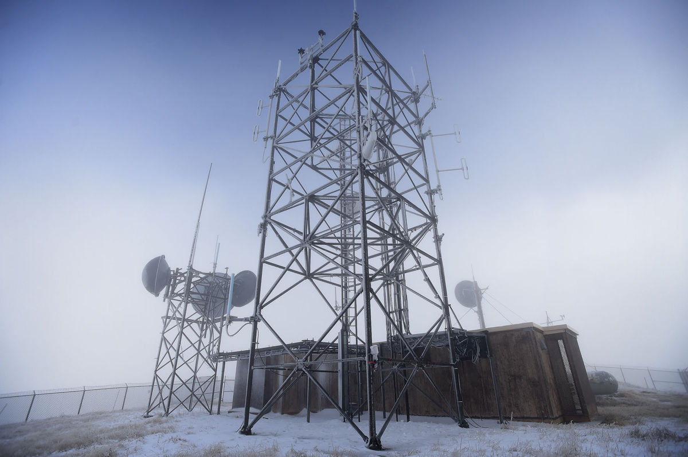
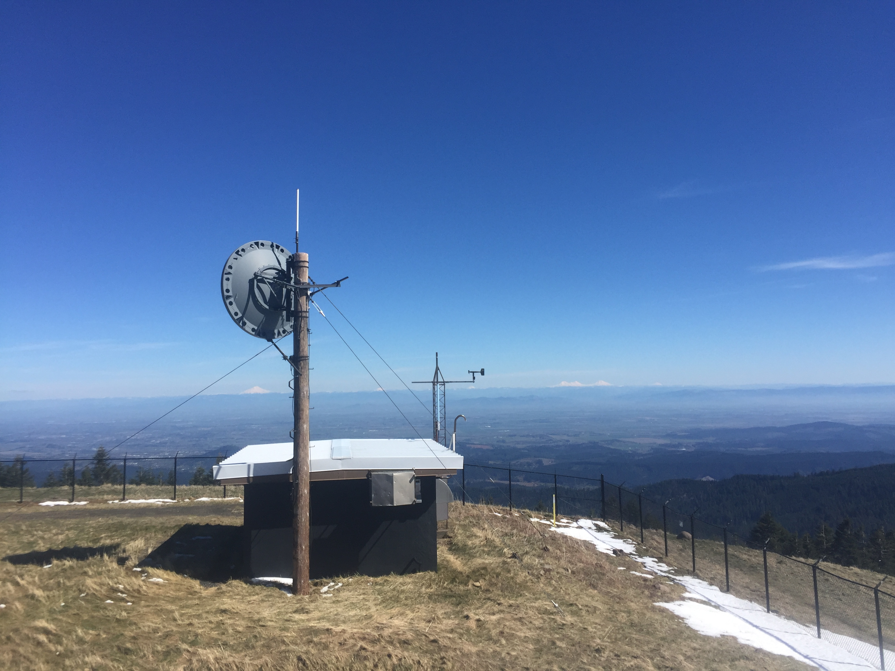

Alternative Locations for Communications Equipment On Mary's Peak
Mary's Peak
Mary’s Peak, sitting 15 miles west of Corvallis, Oregon is the highest point in the Coastal Mountain Range rising to 4,097ft. On-going tectonic forces raised the basaltic seafloor to it’s current height 30 million years ago, and continue to push it higher

Picture: Looking North from the summit
At the summit
Enoying the 360 degree views year-round are radio communication towers. Over a dozen different agencies use this site to relay communications. From the Siuslaw National Forest and the Bonneville Power Anministration (BPA) who must stay in contact with field crews, to emergency response systems including state police and fire departments, the site's location is critical.
"From the Siuslaw’s Corvallis headquarters, a radio signal is beamed to the mountaintop and fans out through a system of 17 repeaters to cover the entire 633,000-acre forest, which stretches along the coast from Tillamook to Coos Bay and inland to Marys Peak. The system provides two-way voice communications for employees in the field through 200 vehicle-mounted radios and 600 handheld units, even in remote areas with no cellphone service."
-Albany Democrat-herold
A call for change
The BPA is looking to upgrade aging equipment at the site, which EPA regulations require and environmental study for first along with allowing for public comment. Public opinion is generally mixed between wanting the site to continue being used as it currently is, and wanting the site altered or removed altogether.
Alternative Locations
To be a viable alternative any new site must provide coverage similar to the current site. This is to ensure that the many agencies who rely on the single site as a critical component of their communications network will not be forced to add many new towers to make up for the loss.
There are four options that could be considered as starting points for an alternative site investigation. Each one is away from the summit, yet still prominent enough to offer a large amount of coverage. The four sites are:
West Point
FAA
Mary's Peak East
Opposite Hill
West Point
A local nonprofit citizens group, Mary’s Peak Alliance Committee,has proposed moving the communications equipment to West Point—a communications site 1 mile west of the Mary’s Peak that is operated and maintained by the City of Corvallis.
FAA
In the same region as West Point there is another communications site owned and operated by the Federal Aviation Administration (FAA). Both the West Point and FAA site have the benefit of power and some infrastructure already in place negating the need for additional spending.
Opposite Hill
The second highest point in the area is a hill opposite of the mountain's summit, called Opposite Hill here.
Mary's Peak East
Bill Gallantly, a retired engineer and Mary’s Peak Alliance member, has his own proposal. It would involve burying the building structures in a concrete bunker on the east slope, and moving the towers 100 yards east of their current location. This would allow the towers to still utilize the high vantage point while clearing the bald summit of any human obstruction.
Comparisons
Each of these four sites have costs and benefits associated with them. Determining which one is the best alternative to the current site requires weighting these costs and benefits against each other. One cost, however, may outweigh all others; coverage.
Without adequate coverage agencies may need to add more communications sites to make up the difference. To quantifiably determine the best of these four alternative sites a viewshed analysis can be run using GIS.
How viewshed analysis works
Viewshed analysis in GIS is the determination of line-of-site visibility from one geographic point to another.
The computation for a viewshed is the process of considering the elevation of all data cells between two points and determining if there are any with a high enough elevation value to impede line-of-sight.
A Digital Elevation Model (DEM) is a raster dataset that holds location and elevation data for each cell. It can be derived by methods of photogrammetry, interpolation of contours, or by LiDAR.
For this analysis an 10 meter resolution NED (National Elevation Dataset) DEM from the USGS was used. This particular DEM was created by photogrammetric methods.
Shown here in red is the current communication's site viewshed.
Results:
West Point
Green areas represent the area visible from the West Point alternative site.
FAA
Green areas represent the area visible from the FAA alternative site.
Mary's Peak East
Green areas represent the area visible from the Mary's Peak East alternative site.
Opposite Hill
Green areas represent the area visible from the Opposite Hill alternative site.
Problem:
Each alternative site is missing large areas the current site is not!
Solution:
Use a combination of sites
A former Forest Service employee who ran communications for the Forest Service for 20 years said locating the towers away from the equipment that powers them "would not be a major issue."
By using more than one of the four alternative sites a cumulative viewshed may be able to provide similar coverage to the current site.
There are 4 combinations that would provide visibility on both sides of Mary's Peak:
FAA + Opposite Hill
FAA + Mary's Peak east
West Point + Opposite Hill
West Point + Mary's Peak east
Losses and Gaines
Each combination will have some visibility lost and some visibility gained when compared with the current site.
To quantifiably determine which alternative site combination is best, the number of visible cells lost was subtracted from the number of visible cells gained to produce a number that represent the net visibility gain of each combination.
Result:
FAA + Opposite Hill
Net Gain: -2,473,581
FAA + Mary's Peak east
Net Gain: -732,683
West Point + Opp Hill
Net Gain: -1,735,462
West Point + Mary's Peak east
Net Gain: 187,930
West Point + Mary's Peak east
The combination of West Point and Mary's Peak east appear to have the best overall viewshed with a net gain of 187,930 cells over the current site's viewshed.
West Point + Mary's Peak east
Net Gain: 187,930
FAA + OppHill Net Gain: -2,473,581
FAA + Mary's Peak east Net Gain: -732,683
West Point + OppHill Net Gain: -1,735,462
Conclusion
Using the results of this viewshed analysis of Mary’s Peak, the WestPoint+MP_west option is the best combination of alternative sites among those surveyed. Not only did it have the highest net gain in visibility, the cells not visible in comparison with the current site had a high degree of dispersion with no dead zones, as opposed to the FAA+MP_west option.
Confusion
Using the results of this viewshed analysis of Mary’s Peak, the WestPoint+MP_west option is the best combination of alternative sites among those surveyed. Not only did it have the highest net gain in visibility, the cells not visible in comparison with the current site had a high degree of dispersion with no dead zones, as opposed to the FAA+MP_west option.